OFFRE DE RENTRÉE IFSI 2026 : -53% SUR LE PACK RÉUSSITE TOTALE
120 fiches cliniques synthétiques et visuelles de poche pour maîtriser les 8 modules, les calculs de doses sans faute et les 100 médicaments majeurs en 3 minutes par jour.
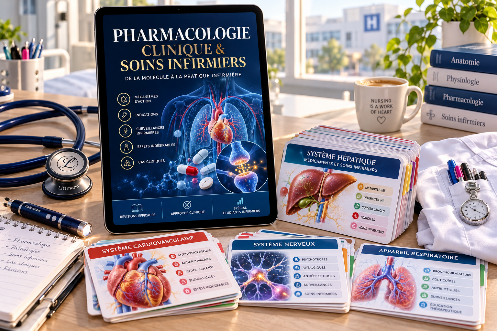
120 FICHES
Programme UE 2.11 complet
3 MINUTES
Pour mémoriser chaque DCI
0 FAUTE
Méthode de calculs de doses
4.9 / 5
+2 480 étudiants équipés
Témoignages vérifiés d'étudiants en 1ère, 2ème et 3ème année dans les IFSI de Paris, Lyon, Bordeaux et Marseille.
« J'avais eu 8/20 au partiel blanc. Les pavés de cours me donnaient des angoisses. Avec PHARMA-PASS, j'ai révisé 20 minutes par jour pendant 3 semaines : 17,5/20 au partiel final ! Le guide de calculs de doses est juste magique. »
Camille L.
ESI 2e Année • IFSI Saint-Joseph (Paris)
« En stage aux urgences, l'infirmière tutrice m'a demandé la surveillance de la Gentamicine. J'ai sorti la fiche de ma poche en 15 secondes. Elle m'a félicité pour ma rigueur. Elles ne quittent plus ma blouse. »
Thomas D.
ESI 3e Année • IFSI Croix-Rouge (Lyon)
« La méthode C.A.P.S. permet de comprendre au lieu d'apprendre bêtement par cœur des listes infinies d'effets secondaires. C'est le meilleur investissement de mes trois années d'études. »
Sarah M.
ESI 1ère Année • IFSI Pellegrin (Bordeaux)
La pharmacologie est l'unité d'enseignement la plus redoutée du diplôme d'État. Voici ce qui bloque 1 étudiant sur 2 :
Des pavés théoriques denses où les informations cliniques vitales sont noyées dans des détails biochimiques jamais demandés aux examens ni en stage.
Une simple virgule déplacée sur une dilution en gouttes/minute ou un pousse-seringue électrique (PSE), et c'est le 0 éliminatoire immédiat aux partiels.
Le premier jour de stage, sous le regard de l'infirmière tutrice, incapable de retrouver en 30 secondes la surveillance clinique d'un médicament à risque.
Chaque fiche condense l'essentiel absolu sur 4 piliers visuels standardisés :
Sur quel organe ou récepteur le médicament agit-il ? Schéma anatomique 3D clair pour mémoriser instantanément.
Quel est l'effet thérapeutique attendu ? Pourquoi le médecin le prescrit-il à ce patient précis ?
Contre-indications absolues, règles de dilution et pièges classiques qui tombent systématiquement en partiel.
Paramètres vitaux (constantes, biologie, ECG) que l'IDE doit surveiller avant, pendant et après l'administration.
Qualité graphique médicale de pointe à 300 DPI pour impression de poche ou lecture sur écran Retina.
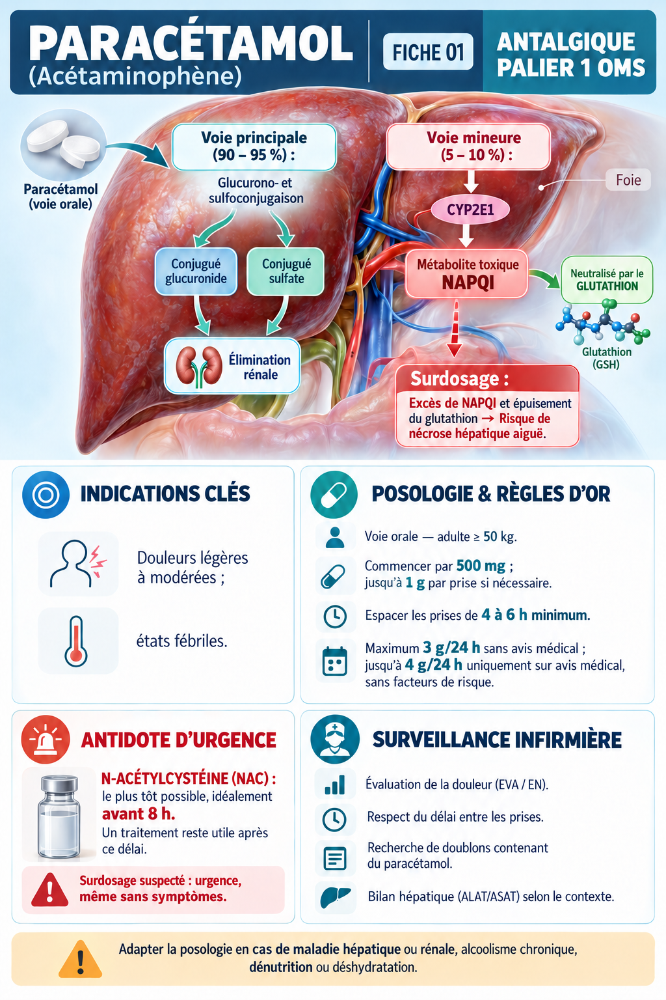
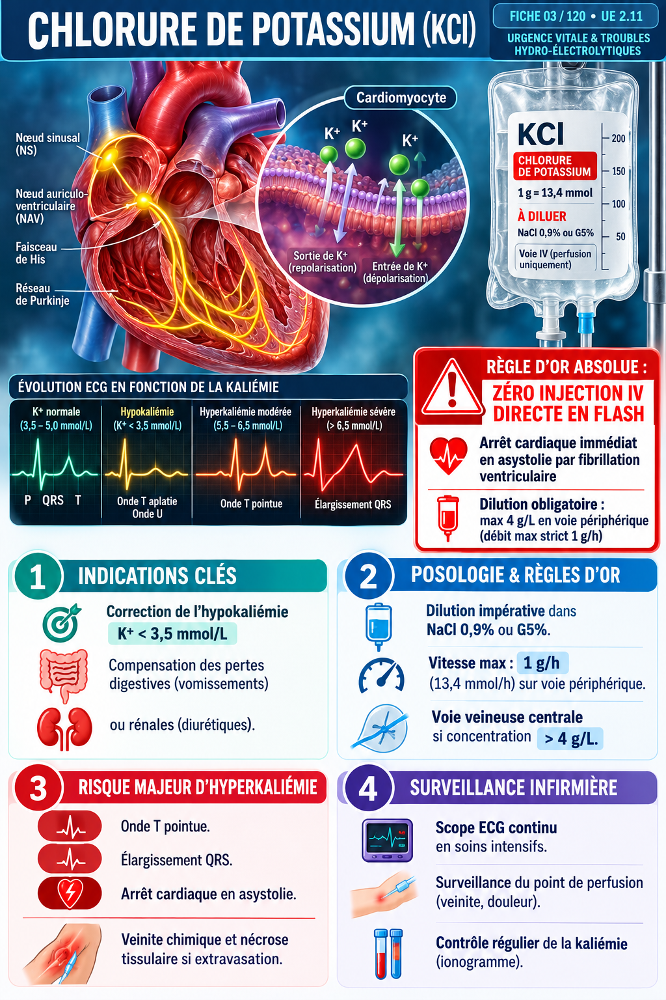
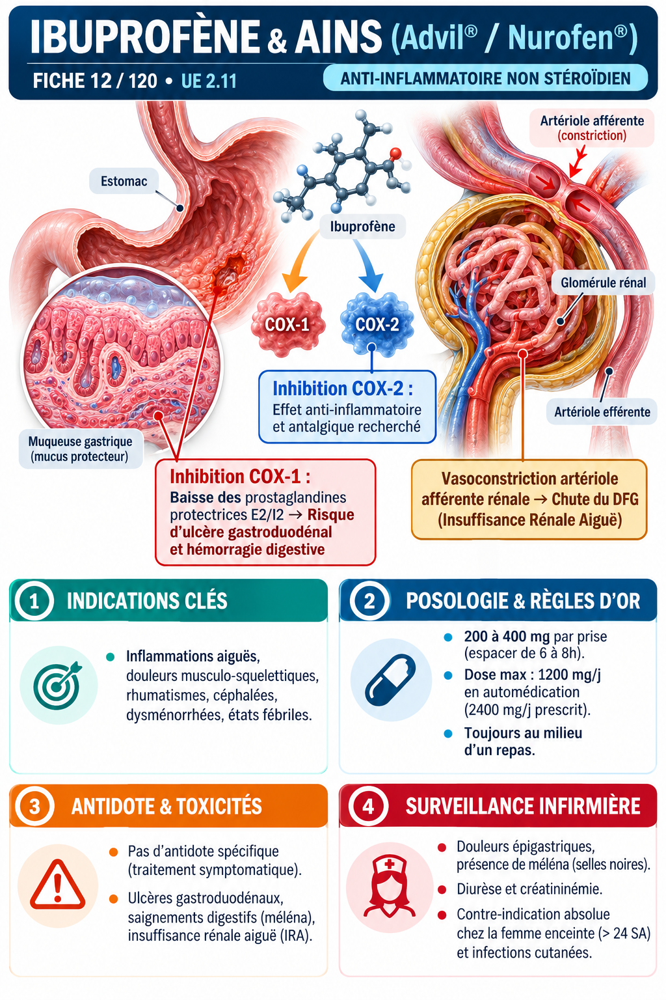
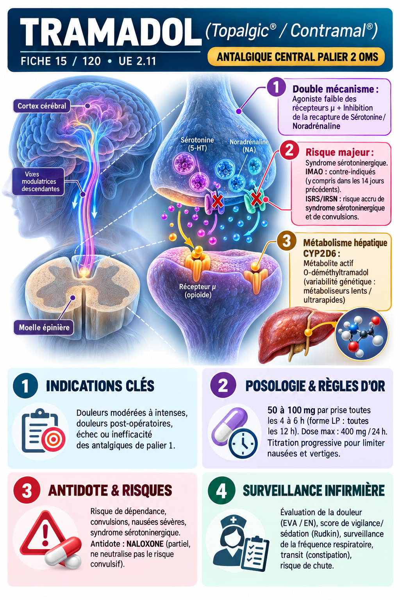
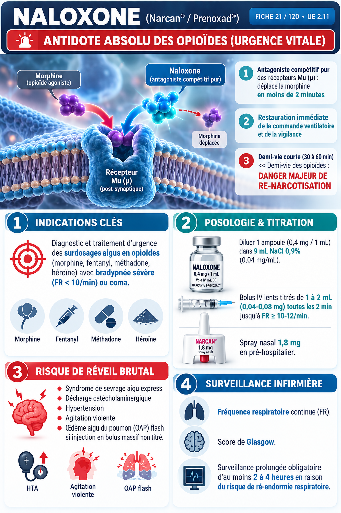
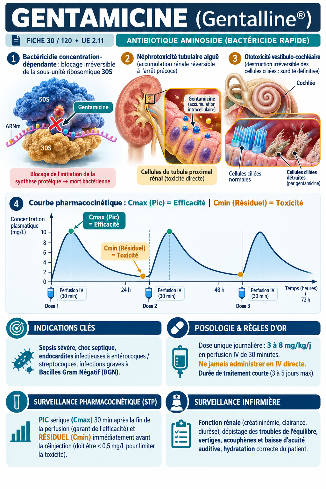
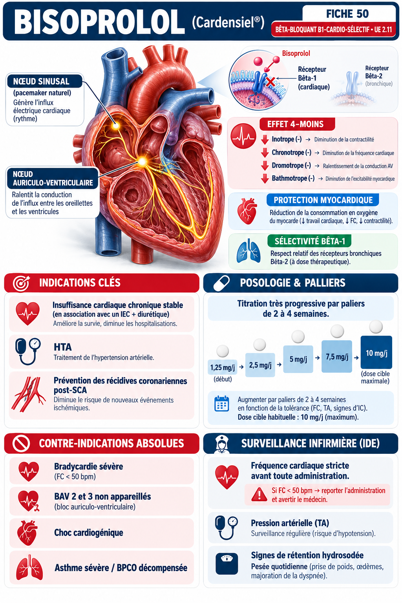
120 fiches cliniques conformes couvrant la totalité des semestres S1 à S5 :
MODULE 1 • 15 FICHES
Pharmaco-cinétique, galénique, voies, dilutions et formules sans erreur.
MODULE 2 • 15 FICHES
Paliers 1, 2, 3 de l'OMS, morphine, AINS, corticoïdes et toxicités.
MODULE 3 • 20 FICHES
Antihypertenseurs, bêtabloquants, IEC, diurétiques et dérivés nitrés.
MODULE 4 • 15 FICHES
Héparines HBPM, AVK, AOD, antiagrégants et surveillance biologique.
MODULE 5 • 15 FICHES
Antibiotiques, antifongiques, antiviraux et prévention de l'antibiorésistance.
MODULE 6 • 15 FICHES
Anxiolytiques, hypnotiques, antidépresseurs, neuroleptiques et antiépileptiques.
MODULE 7 • 15 FICHES
Insulines rapides/lentes, antidiabétiques oraux et pathologies thyroïdiennes.
MODULE 8 • 10 FICHES
Adrénaline, atropine, drogues vasoactives, solutés et antidotes vitaux.
Chaque guide possède sa propre maquette 3D et répond à une angoisse précise du stage hospitalier :
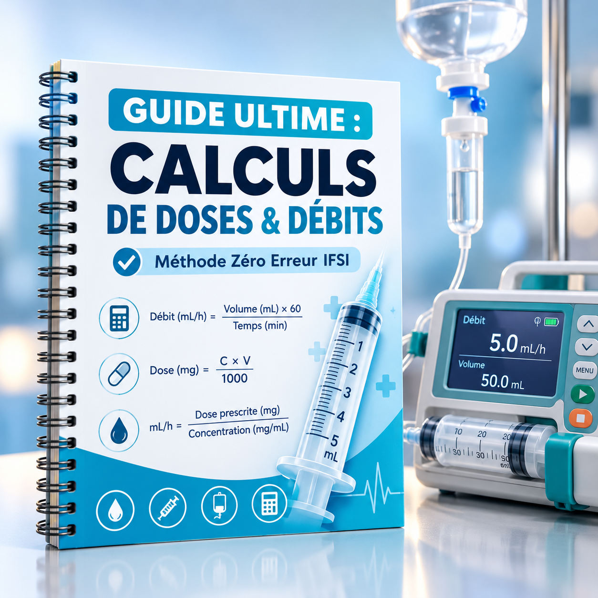
Dilutions, seringues électriques (PSE), perfusions par gravité et exercices corrigés pas à pas.
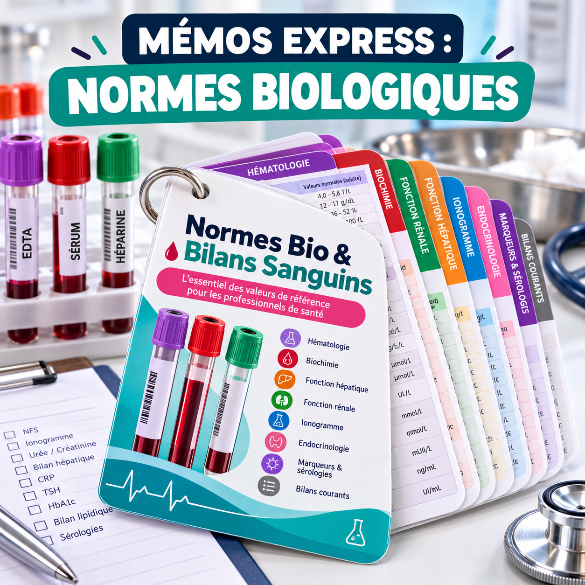
Ionogramme, NFS, hémostase (INR, TCA), gaz du sang et valeurs d'alerte vitale immédiate.
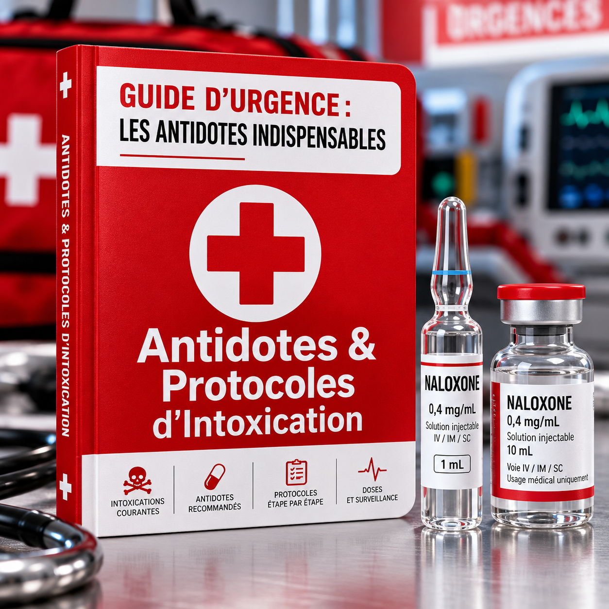
Naloxone, Flumazénil, NAC, Vitamine K1, Protamine et conduites à tenir d'urgence.
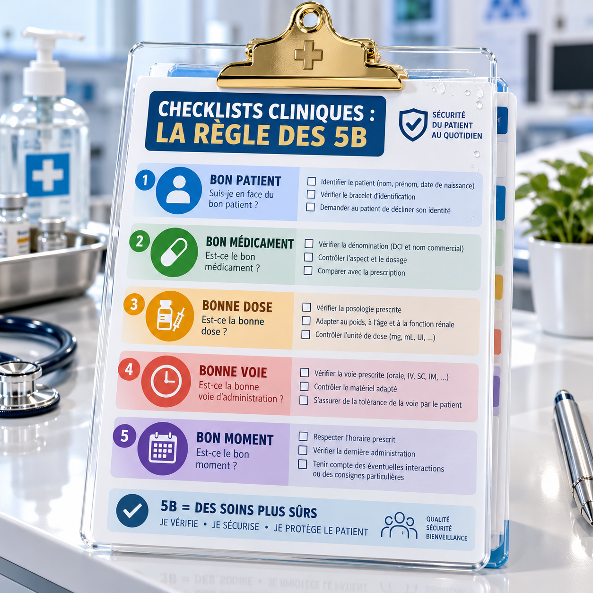
Bon patient, bon médicament, bonne dose, bonne voie, bon moment pour sécuriser chaque administration.
Accès immédiat après paiement sécurisé. Garantie inconditionnelle de 7 jours.
La base clinique pour réviser l'UE 2.11
Garantie 7 jours satisfait ou remboursé
L'arsenal absolu pour valider et briller en stage
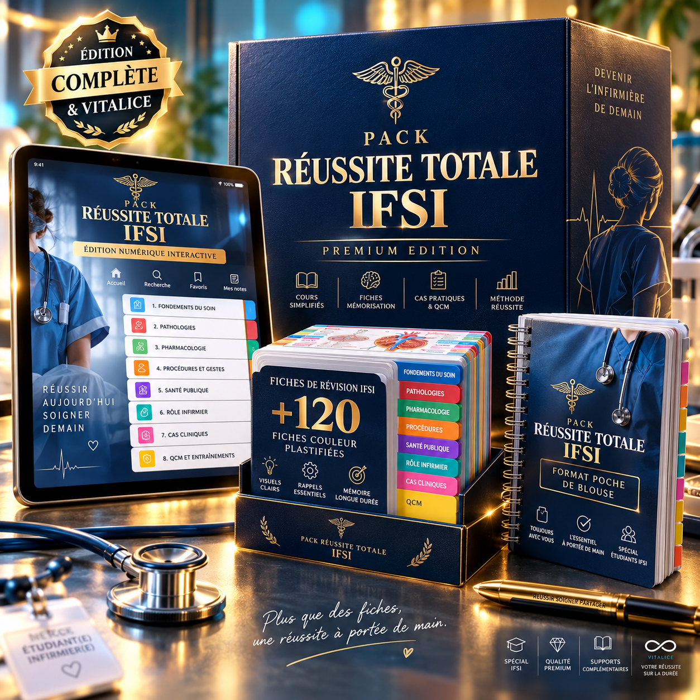
🔒 Paiement sécurisé SSL • Garantie 7 jours satisfait ou remboursé
Testez l'intégralité des 120 fiches et des 4 guides cliniques pendant 7 jours complets. Si vous n'êtes pas absolument convaincu qu'elles vous feront valider votre UE 2.11 et réussir vos stages, envoyez un simple e-mail et vous serez remboursé à 100% dans l'heure, sans aucune justification demandée.
Immédiatement après validation de votre commande, vous recevez vos identifiants par e-mail avec un lien direct de téléchargement en PDF haute résolution et l'accès à votre espace iPad interactif.
Oui. Le référentiel de formation des études en soins infirmiers est national en France. Toutes les fiches respectent scrupuleusement les arrêtés ministériels et les recommandations de l'ANSM.
Absolument. Les fichiers sont formatés au standard A6 (format poche de blouse d'infirmière) et A4 avec repères de découpe pour une impression facile chez vous ou chez un imprimeur.